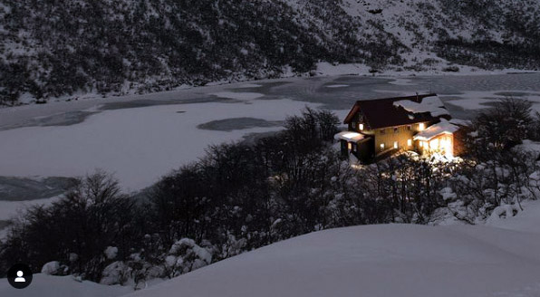

El refugio Gral San Martín, más conocido como Refugio Jakob debido al lago que está a sus pies, está ubicado a 1600 metros sobre el nivel del mar. Fue construido a base de piedra y madera, a principios de los años cincuenta, y ampliado en sucesivas ocasiones. Actualmente la nueva edificación, tiene una capacidad para albergar cómodamente hasta 60 personas aproximadamente, cuenta con distintas habitaciones con vistas al lago y a los cerros cercanos
. El refugio ofrece un servicio de abundantes comidas caseras, cenas, desayunos y meriendas completas.
El sendero comienza en el Tambo Báez.La entrada al tambo se ubica sobre la RP79 (“camino viejo” a Colonia Suiza), a un kilómetro del puente vial sobre el arroyo Casa de Piedra. Al mismo se puede llegar en auto (hay estacionamiento pago en el lugar) o en colectivo y caminando.
El refugio se encuentra abierto todo el año. Los servicios que se ofrecen incluyen pernocte, media pensión y pensión completa, con opciones de platos vegetarianos, veganos y una variedad de bebidas y vinos